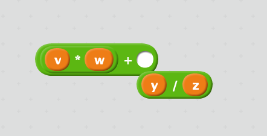

Source: http://azu.github.io/slide/JSojisan/resources/ast-is-true.png
Course page: https://maxxk.github.io/programming-languages-2016/
Contact author:
In similar way to the annotations of model checking tools, the optional type checkers do not neccessarily accept all correct programs.
/*::
type BinaryTree =
{ kind: "leaf", value: number } |
{ kind: "branch", left: BinaryTree, right: BinaryTree }
*/
function sumLeaves(tree /*: BinaryTree*/): number {
if (!tree.left) { // condition was: kind == "leaf"
return tree.value;
} else {
return sumLeaves(tree.left) + sumLeaves(tree.right);
}
}Example: standard character set: machine-specific character set → ANSI (C) → UCS-2 (C#, JavaScript) → UTF-8
"👍".length = 2Linguistics in general is concerned with three main aspects of a written language:
(non-computer languages also have:
)
Definitions from Merriam-Webster
See also: http://www.sbql.pl/Topics/Syntax%20semantics%20and%20pragmatics.html
Syntax of a programming language is concerned with the form of programs: how expressions, commands, declarations and other constructs must be arranged to make a well-formed program.
Definition from D. Watt — Programming Language Design Concepts
How can we write the program and how the compiler/interpreter expects it to be formed.
Example based on F. Turbak, D. Gifford. Design Concepts in Programming Languages
Suppose we want to compute the sum of the product of v and w and the quotient of y and z.
Syntax representations:
- mathematical expression: \(v·w + \dfrac{y}{z}\)
- traditional infix notation:
v*w + y/z- LISP prefix S-expression:
(+ (* v w) (/ y z))- reverse polish notation / stack calculator:
v w * y z / +- some visual "syntax"

Semantics of a programming language is concerned with the meaning of programs: how a well-formed program may be expected to behave when executed on a computer.
Definition from D. Watt — Programming Language Design Concepts
We will spend a half of the course on this topic, but today we speak about syntax.
A well-formed formula x*y + z may have meaning:
- compute the specified formula to get a numerical value as an answer for specific values of x, y, z
- integral operations for integers
- floating-point operations for floating-point number
- logical or lattice operations (disjunction and conjunction, max and min)
- (python) replicate y times the string stored in x and concatenate it with z converted to string
- just a symbolic expression for the further optimization
- etc.
A programming language's pragmatics is concerned with the way in which the language is intended to be used in practice.
Definition from D. Watt — Programming Language Design Concepts
No general consensus on the definition.
Two sides:
- human interface (how the programmers are expected to design and implement programs in practice: design patterns, concurrency support and specific model, foreign function interfaces, packaging system; exception-based control flow :)
- implementation details (specific garbage collection algorithm, semantics-preserving optimizations)
Evaluation strategy (strict / lazy) is a part of semantics (because the change of strategy changes the meaning of the same syntactic formula).
Our objective is to get a precise mathematical description of a program.
Each part of language specification must be implemented in mathematical terms.
List
(regular ⊂ context-free ⊂ context-sensitive ⊂ unbounded)
We could make a relation between programs and formal languages in many ways:
It is obvious that for almost every practical programming language \(L_3\) is unbounded. For the modern languages, \(L_1\) is usually context-free or some subset of context-free languages (Deterministic Context-Free Languages, unambiguous languages which can be accepted by deterministic pushdown automaton and therefore can be parsed in \(O(n)\)).
\(L_2\) may be decidable, but not usually decidability is not proven. Compiler freezes may be caused by undecidability of type checking.
List
Traditionally decision problem of \(L_1\) membership (well-formedness of a program) is split by two parts:
int main(int argc, char argv)KEYWORD IDENTIFIER LPAR KEYWORD IDENTIFIER COMMA KEYWORD IDENTIFIER RPARList
Source: http://azu.github.io/slide/JSojisan/resources/ast-is-true.png
— a representation of an abstract syntax of a program

Multiple representations of concrete syntax may correspond to a single abstract syntax.
Lisp S-expression is a direct representation of abstract syntax tree:
(+
(* v w)
(/ y z) )Languages (which are (possibly infinite) subsets of strings of some alphabet: Σ*) may have a finite description, which is called "grammar".
(Backus-Naur Form, by Dijkstra, because "it is not a normal form")
During the development of ALGOL 60, John Backus proposed a notation for context-free grammars:
- group of characters named expr is denoted as
<expr>;- character constants are quoted
"("- sequence of constants and groups defines a sequence
"(" <expr> ")"- group of characters is defined by an operator
::=:
<expr> ::= "(" <atom> ")"- definitions may use recursion:
<parens> ::= "" | "(" <parens> ")"- at the right side of the definition operator the alternative operator | is allowed:
<expr> ::= <expr> | <expr> <add-operation> <atom>
<syntax> ::= <rule> | <rule> <syntax>
<rule> ::= <opt-whitespace> "<" <rule-name> ">" <opt-whitespace> "::=" <opt-whitespace> <expression> <line-end>
<opt-whitespace> ::= " " <opt-whitespace> | ""
<expression> ::= <list> | <list> <opt-whitespace> "|" <opt-whitespace> <expression>
<line-end> ::= <opt-whitespace> <EOL> | <line-end> <line-end>
<list> ::= <term> | <term> <opt-whitespace> <list>
<term> ::= <literal> | "<" <rule-name> ">"
<literal> ::= '"' <text> '"' | "'" <text> "'"Analytical grammar formalism, a superset of regular expressions:
Most direct PEG implementations do not support left recursion in grammar. Parsing of the following grammar will not terminate:
Value ← [0-9.]+ / '(' Expr ')'
Product ← Expr (('*' / '/') Expr)*
Sum ← Expr (('+' / '-') Expr)*
Expr ← Product / Sum / ValueIt is possible to rewrite grammars without left recursion.
Infix mathematical notation is probably the only desirable part of syntax which don't have nice representations as an S-expression
(defun triangle (number-of-rows) ; Version with
; incrementing counter.
"Add up the number of pebbles in a triangle.
The first row has one pebble, the second row two pebbles,
the third row three pebbles, and so on.
The argument is NUMBER-OF-ROWS."
(let ((total 0)
(row-number 1))
(while (<= row-number number-of-rows)
(← total (+ total row-number))
(← row-number (1+ row-number)))
total))Infix operators are complicated for parsing:
a * b + c, a + b * ca + b + ca / b / c ⟶ (a / b) / ca = b = c ⟶ a = (b = c)a < b < c is invalid in C#The non-associatitvity is hard to represent in syntax, so it is usually a property of semantics.
Operator binding power:
1 + 2 * 4
See also:
If a rule of the grammar is matched, compute an additional information to attach to an AST node.
Expr1 → Expr2 + Term [ Expr1.value = Expr2.value + Term.value ]
Expr → Term [ Expr.value = Term.value ]
Term1 → Term2 * Factor [ Term1.value = Term2.value * Factor.value ]
Term → Factor [ Term.value = Factor.value ]
Factor → "(" Expr ")" [ Factor.value = Expr.value ]
Factor → integer [ Factor.value = strToInt(integer.str) ]Special technique of parser implementation for functional languages (required support of higher-order functions)
type Parser<U, V> = Iterable<U> → V
or<U,V> : (left : Parser<U, V>, right : Parser<U, V>) → Parser<U, V>
and<U,V> : (left : Parser<U, V>, right : Parser<U, V>) → Parser<U, V>
repeat<U, V> : (p : Parser<U, V>) → Parser<U, Array<V>>
str : string → Parser<string, string>Example implementations:
Contex-free grammar parsers:
Non-context-free:
template<bool V> struct answer { answer(int) {} bool operator()(){return V;}};
template<bool no, bool yes, int f, int p> struct IsPrimeHelper
: IsPrimeHelper<p % f == 0, f * f >= p, f + 2, p> {};
template<bool yes, int f, int p> struct IsPrimeHelper<true, yes, f, p> { using type = answer<false>; };
template<int f, int p> struct IsPrimeHelper<false, true, f, p> { using type = answer<true>; };
template<int I> using IsPrime = typename IsPrimeHelper<!(I&1), false, 3, I>::type;
template<int I>
struct X { static const int i = I; int a[i]; };
template<typename A> struct foo;
template<>struct foo<answer<true>>{
template<int I> using typen = X<I>;
};
template<> struct foo<answer<false>>{
static const int typen = 0;
};
int main() {
auto b = foo<IsPrime<234799>>::typen<1>(); // Syntax error if not prime
return 0;
}http://stackoverflow.com/questions/14589346/is-c-context-free-or-context-sensitive
Task 3.1** Implement parser combinators a programming language of your choice. Must be implemented at least the following combinators:
{kind=link}